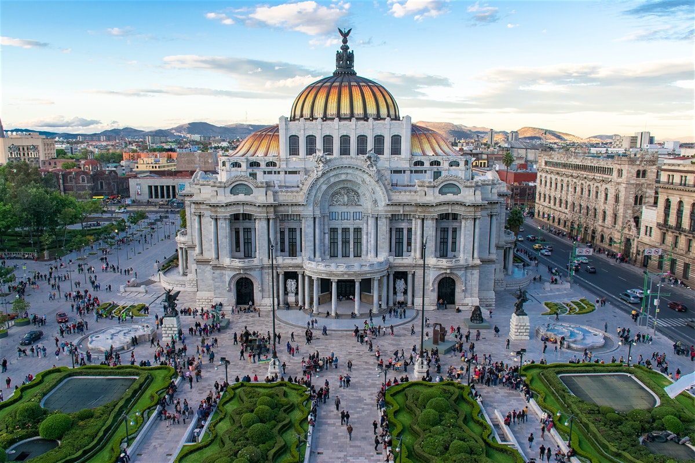
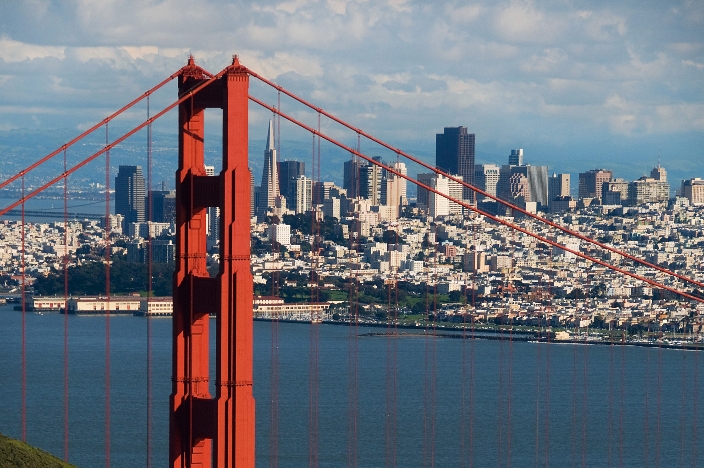

Hello, my name is Emiliano Campili Warren; as the title of this web page so perfectly states. In this website you will read and learn about my life story. I hope you find it interesting.
Here's a picture of me
I guess I should tell you a little about myself.
I'm not from georgia, I was born in Ossining, New York. Its a small town north of Manhattan on the bank of the Hudson River. I never really spent much time there however due to my parents deciding to move across the country when I was just 6 months old. From New york we moved to San Francisco, California. There we moved between several houses as my parents solidified their job security. During that time I was put in a very progressive kindergarten school which focused on social skills and playing for young children instead of scholastic topics. I remained in this school when my brother was born on september 12, 2000; I was two years old then. After my brother was born my parents went looking for a house to buy that we could call our own. Something bigger to support a family of four. My parents ended up finding a nice two story houce with a decent back yard in a mid to low income neighborhood called the mission district.
I remember alot of things when I lived in that house.
One of the things I remember, for example, is that across the street from me lived a poor mexican amercan family. I knew the oldest brother in the family and he was several years older than me at the time. I was probably six or seven at the time but he was 14 and to me he was so cool. I really looked up to him because he was so different than me. He would go out at night and graffiti the electric line poles on the sidewalk and he would skate around on his skateboard and he alwas wore baggy shirts.
Another memory that has stayed with me when we lived in that peach colored house was two Bougainvillea vine bushels that grew up the front of our house. They had thorns but also the most beautiful purple flowers. For some reason the image of those flowers really stuck with me.
After San Francisco, my family moved to Mexico city due to a new job assignment that the Associated Press gave my dad. We lived downton in Mexico City. Our house there was built of a sand colored, faded marble and dark brown metal for the windows and doors. Some days I thought that it looked like a prison. Other nights it served as a respute from the day and from school. Mexico influenced me greatly and was a big factor in who I am today. Being an american in Mexico city at the time was hard. I got bullied alot by the local kids and it was hard for me to find friends at first. I ended up finding a couple of other expats and they became my close friends during my time in Mexico. They're names were Bryce and Diego.
After Mexico City we moved again to Buenos Aires, Argentina. Half of my family lives in that city and when we learned that we were moving there I was very excited. As soon as we stepped off the gate for our plane I noticed that the air smelled different. It smelled like Argentina. It was so different at the time that it surprised me. I couldnt stop taking in the sights and sounds. Later on in life I realize now that the smell of Argentine air is one of the greatest things that I have ever experienced.
My dad had singed a contract for his work in Argentina. What that meant was that once that contract expired, we would have to move from Argentina in order for my dad to keep all the benefits that the company that he nwas working for was giving him. When it became time to move we looked all around the United States trying to find job openings within the Associated Press and other jobs outside the company. My family and I could have ended up in Phoenix Arizona for all we knew. It was a hard year but my dad managed to land a good paying job within the company in Atlanta. Once we moved, I enrolled in Decatur Highschool and finished my highschool career there. I won a state championship in soccer playing goalie for my team in 2016.
All in all I would say that my life has been interesting. I've had the priviledge to live in three countries and the opportunity to learn three languages and interact with a truely international and intra-cultural croud. Now, with my knowledge and life experience, I will provide a table describing the best aspects of each country that I lived in.
|
Argentina |
Argentina is absolutely beautiful. I, of course, am biased twoards my country, but then again it is just simply astounding. After living there for five years I realized that there are several things that make Argentina, Argentina. Heres a list of those things.
Argentina's culture is one of peace and lively hood. Of course, there are a few bad apples, but for the most part everybodsy is loving. Argentina is known for having the best steak in the world, as well as delicious icecreams, pastas and famous empanadas. As I've mentioned before, the culture of argentina is one of lively hood and peace. When living or visiting Argentina you will come across a whole rainbow of people, who, if approached nicely, will help with most things and treat you with respect. |
|
Mexico |
Mexico City is also one of the most beautiful places I have lived. I spent five years there as my father started the Mexican branch of the Associated Press. There was several things I leaned to admire about this beautiful City and Country
Mexico is one of the few countries in the world that has one of the most extencive flavor pallets i have ever come into contact with. THe sheer amount of spicves, herbs and ingrediaents thats in the food there can take a skeptic and put them on the train to flavortown. Mexico has one of the richest cultures in the world. From a rich base of the Aztec empire and the Spanish conquistadores, theres every kind of person in Mexico and its worth meeting as many people as you can. |
|
United States | The United States of America is considered to be on the forefront of global society in the world today. American society serves as a "Beacon" of hope and prosperity to those less fortunate in the world
America is the only country in the world to successfuly market a mindset. They have most of the world society convinced that Ameica is one of the best places to live due to levels of prosperity and safety. Also, they are the self proclaimed champions of human rights, so we are "allowed" to invade any country we please if it means killing insurgents or stealing oil. Classic american food is pretty bad, but, the good food comes from all the immigrants of this fine country. They brought good food to this otherwise sea of grease and transfats. |

Here I have provided several links leading to popular tourism websites of each of the countries that I have mentioned. Hopefully with the information I have provided, you might want to visit these countries one day.
- Argentina's Premier Tourism Website
- Mexico's Premier Tourism Website
- America's Premier Tourism Website
Many, many thanks for viewing my website. I hope that the information that I have provided has given you an idea of the life that I have led for these past 19 years.
If theres one thing that I believe could be taken from my website it's a possible couriosity and want to see the countries that i speak so highly about. If one day you, the reader, manage tomake it to these places, then I hope you have fun :)